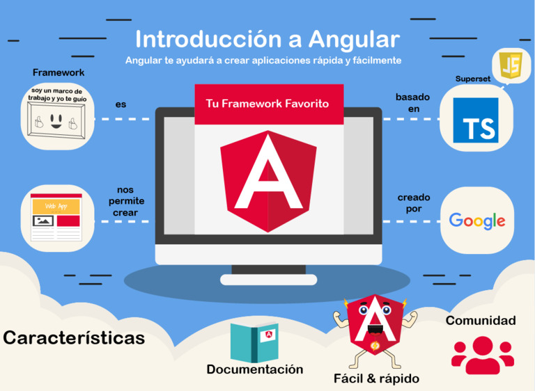

Angular (comúnmente llamado Angular 2+ o Angular 2) es un framework para aplicaciones web desarrollado en TypeScript, de código abierto, mantenido por Google, que se utiliza para crear y mantener aplicaciones web de una sola página. Su objetivo es aumentar las aplicaciones basadas en navegador con capacidad de Modelo Vista Controlador (MVC), en un esfuerzo para hacer que el desarrollo y las pruebas sean más fáciles.
La biblioteca lee el HTML que contiene atributos de las etiquetas personalizadas adicionales, entonces obedece a las directivas de los atributos personalizados, y une las piezas de entrada o salida de la página a un modelo representado por las variables estándar de JavaScript.
Angular se basa en clases tipo "Componentes", cuyas propiedades son las usadas para hacer el binding de los datos. En dichas clases tenemos propiedades (variables) y métodos (funciones a llamar).
Puedes cosultar la documentación oficial de Angular haciendo click aquí.